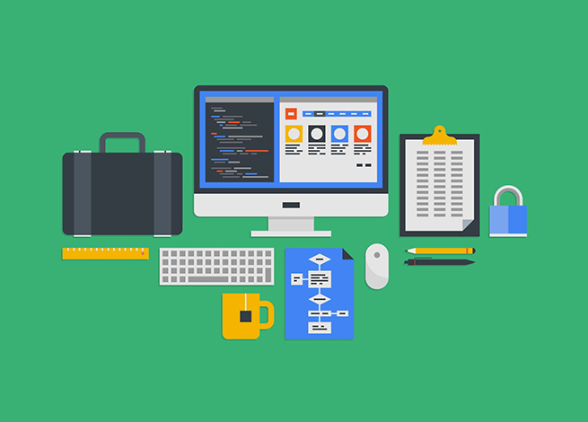

HERRAMIENTAS DE PROTOTIPADO
 Como veíamos en nuestro artículo sobre el flujo de trabajo habitual en la creación de páginas y aplicaciones web, el prototipado es una de las fases importantes de todo proyecto web. Nos permite aproximarnos a la Experiencia de Usuario que tendrán los visitantes, así como establecer la arquitectura de la información que ofreceremos. En este artículo, repasamos algunas herramientas que resultan especialmente útiles en esta fase del Desarrollo Web, también conocida como mockup o maqueta, y que supone un paso imprescindible para que el resultado final de un proyecto se ajuste a las necesidades y expectativas de los clientes. El prototipo, también llamado mockup o maqueta, no es algo específico de la web, sino que se utiliza en muchos sectores de la industria y sirve para plasmar de una manera rápida y sencilla las bases que se usarán para el desarrollo de un producto. Los prototipos se crean sobre herramientas ligeras y sencillas de usar, que nos permitan llevar las ideas al terreno de lo concreto y proyectar de manera detallada, lo más cercana a la realidad posible, cómo será realizado el proceso de creación de ese producto más adelante. Aunque cada desarrollador o equipo de trabajo puede tener sus propios flujos de creación de proyectos web, lo ideal es no saltarse la etapa de prototipado, pues ayuda a mantener ajustado el presupuesto final de un proyecto, ya que evita tener que corregir el producto una vez está desarrollado. Es mucho más fácil decidir qué cambios se desean incorporar a los prototipos, que esperar a que el sitio web o la app estén presentados para cambiar pequeños o grandes detalles sobre el producto final. No nos podemos olvidar de que la herramienta más importante para comenzar el prototipado es el papel y lápiz (acompañados por la imprescindible goma de borrar). Estos recursos analógicos nos facilitarán la primera aproximación a nuestro proyecto, y nos ayudarán a concretar y a pasar de la idea a algo más material. Con este diseño perfilado, podremos tomar las primeras decisiones y esquematizar más fácilmente diversas alternativas para el proyecto. Los bocetos que obtenemos con papel y lápiz tiene el nombre de Wireframe y su objetivo no es ser fiel con el resultado final, sino más bien tener una aproximación esquemática. El papel y lápiz es un recurso también perfecto para aprovechar las primeras reuniones con el cliente y fomentar su participación en el proyecto. Sin embargo, una vez hemos tomado las primeras notas, realizado los primeros esquemas y definido una línea aproximada para las interfaces de usuario y la experiencia de uso, tenemos toda la información necesario para pasar a la fase del prototipado. Sobre la idea inicial definida con los wireframes, realizaremos los mockups o prototipos, para los que contamos con una serie de herramientas y recursos profesionales que analizamos a continuación y que nos permitirán obtener una aproximación más exacta cómo se va a presentar el trabajo final. Muchas veces, incluso nos permitirán dotar a los mockups de cierta interactividad que ayude a representar el funcionamiento del trabajo final y la Experiencia de Usuario. Las herramientas para realizar mockups, además, pueden permitir en la mayoría de las ocasiones obtener feedback directo por parte del cliente, recibiendo sus comentarios y correcciones directamente sobre los prototipos, lo que nos permite implementar mejoras sobre la marcha. A continuación, repasamos algunas de las herramientas de prototipado más utilizadas: Invision. Es una herramienta para facilitar el desarrollo de mockups y wireframes, así como mantener el contacto con el cliente. Dispone de herramientas para dibujo a mano alzada, que se pueden compartir en tiempo real, herramientas para montar prototipos y diseñar la interacción, hasta un tablero que nos permite mantener centralizadas todas las historias de producto y el feedback del cliente. Balsamiq. Una de las herramientas más utilizada para realizar wireframes y también mockups. Tiene tanto versión de escritorio como versiones online, que podemos usar por una cuota mensual. Moqups. Herramienta online que cubre todo el flujo de diseño y prototipado de sitios y aplicaciones. Ofrece la posibilidad de llegar muy lejos en lo que respecta al diseño, incluso revisar y aplicar cierta interactividad. Los clientes al conectarse a la herramienta pueden usar los prototipos y aportar comentarios directamente sobre las pantallas e interfaces. Mockplus. Otra herramienta profesional para crear mockups, en este caso basada en aplicación de escritorio, cuyo punto fuerte es su completo diseño de interacción y la posibilidad de probar en dispositivos reales. Obviamente, ofrece toda una biblioteca de componentes para poder montar cómodamente los prototipos, con altas opciones de personalización. Proto.io. Este software online tiene como objetivo la creación de prototipos «que parecen reales». Para conseguirlo, es capaz de usar componentes de la biblioteca y personalizados, a la vez que provee de herramientas para aplicar interacción.